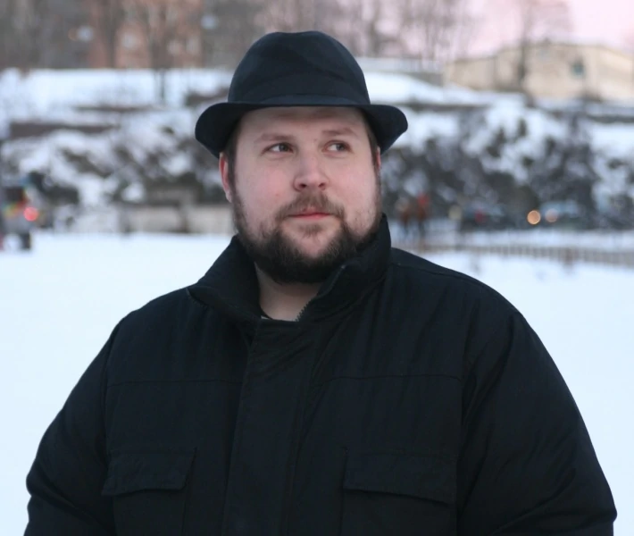

Ма́ркус Алексе́й Пе́рссон (швед. Markus Alexej Persson),
также известный под ником Notch (Нотч, род.
1 июня 1979 года, Стокгольм, Швеция) — шведский
программист и гейм-дизайнер. Был владельцем компании
Mojang Studios, которую основал совместно с Карлом
Маннехом и Джейкобом Порсером в 2009 году.
Является создателем популярной компьютерной игры
Minecraft. Первую игру создал в 8 лет на домашнем
компьютере Commodore 128.
также известный под ником Notch (Нотч, род.
1 июня 1979 года, Стокгольм, Швеция) — шведский
программист и гейм-дизайнер. Был владельцем компании
Mojang Studios, которую основал совместно с Карлом
Маннехом и Джейкобом Порсером в 2009 году.
Является создателем популярной компьютерной игры
Minecraft. Первую игру создал в 8 лет на домашнем
компьютере Commodore 128.
Майнкрафт
До

версия: Pre-Classic rd-131655 (Java Edition)
После

версия: 1.19.2